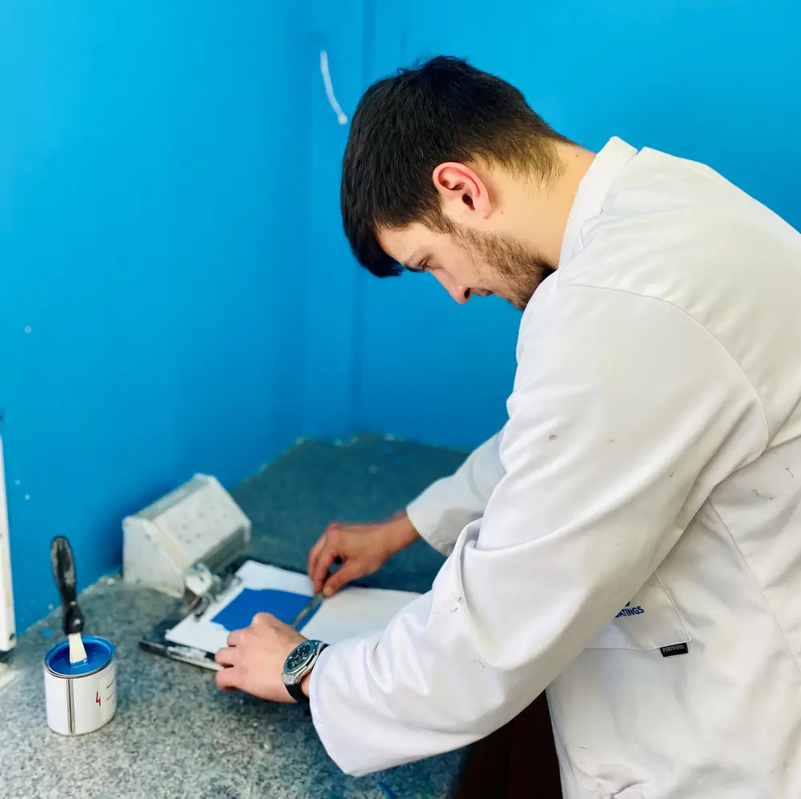
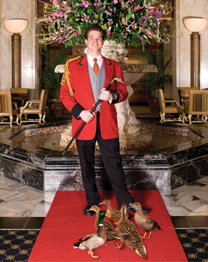
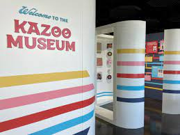
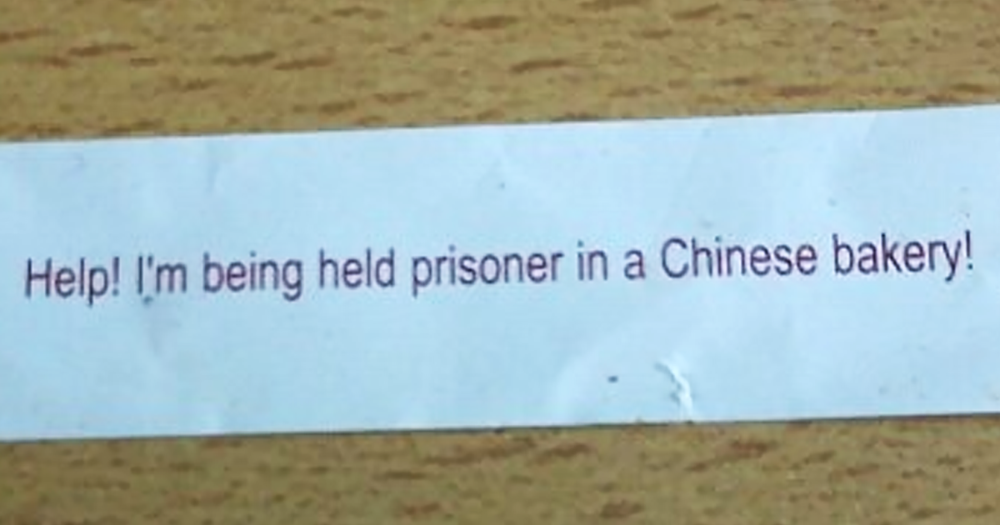
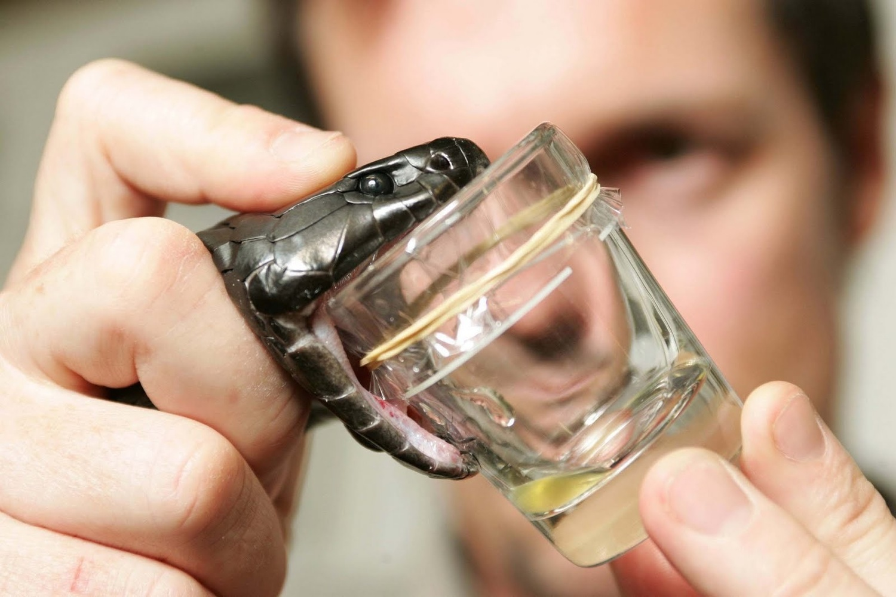
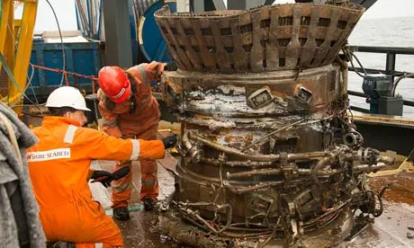
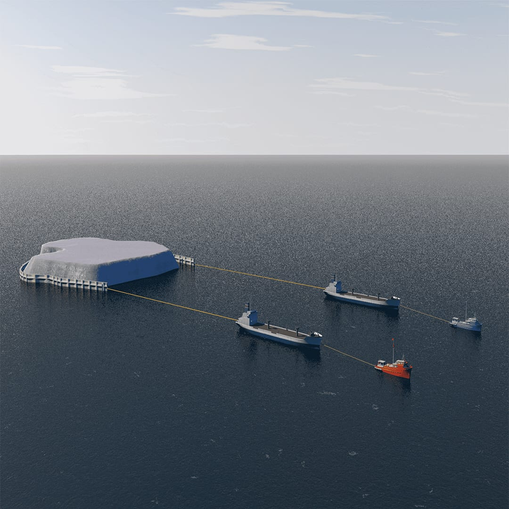
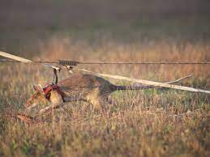
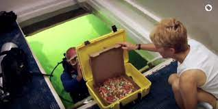

| 1 | Drying paint watcher | carefully observe the changing colors and particles of paint as it dries | Turner Construction |  |
| 2 | Duck master | Feeding, training and cleaning up after the ducks that live on the roof of the hotel by night and entertain guests in the lobby by day | Peabody Hotel |  |
| 3 | Kazoo Factory museum worker | Be able to give a history of the kazoo and be able to produce them | Kazoobie Kazoo Factory & Museum |  |
| 4 | Fortune Cookie Writer | Write fortune cookies. | Siete Family Foods |  |
| 5 | Snake Milker | A specialist zoologist who is able to extract venom from snakes and other venomous reptiles for the purpose of creating anti-venom or for medical research. | Any zoo that has snakes |  |
| 6 | Rocket recovery technician | Stage, set up, assemble/disassemble, test and install/remove flight hardware using precision calibrated tools | SpaceX |  |
| 7 | Full-time Netflix viewer | spend hours watching TV shows and movies | Netflix(shocker) | |
| 8 | Iceberg mover | keep an eye on the North Atlantic Ocean and move any icebergs that might get in the way of a ship or an oil rig or anything that doesn't do well with iceberg collision. | Iceberg Transport International |  |
| 9 | Detecting landmines with rodents professional | Guide the rat to each area to find and remove the landmines | APOPO(Anti-Persoonsmijnen Ontmijnende Product Ontwikkeling(Anti-Personnel Landmines Detection Product Development)) |  |
| 10 | Scuba Diving Pizza Delivery Man | Deliver pizza to guests staying at the underwater hotel. | Jules' Undersea Lodge |  |